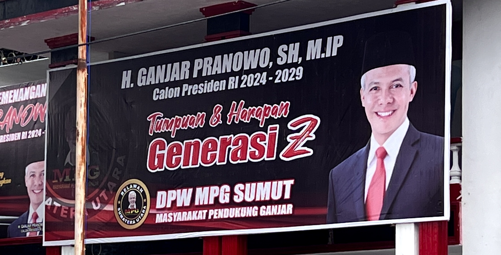
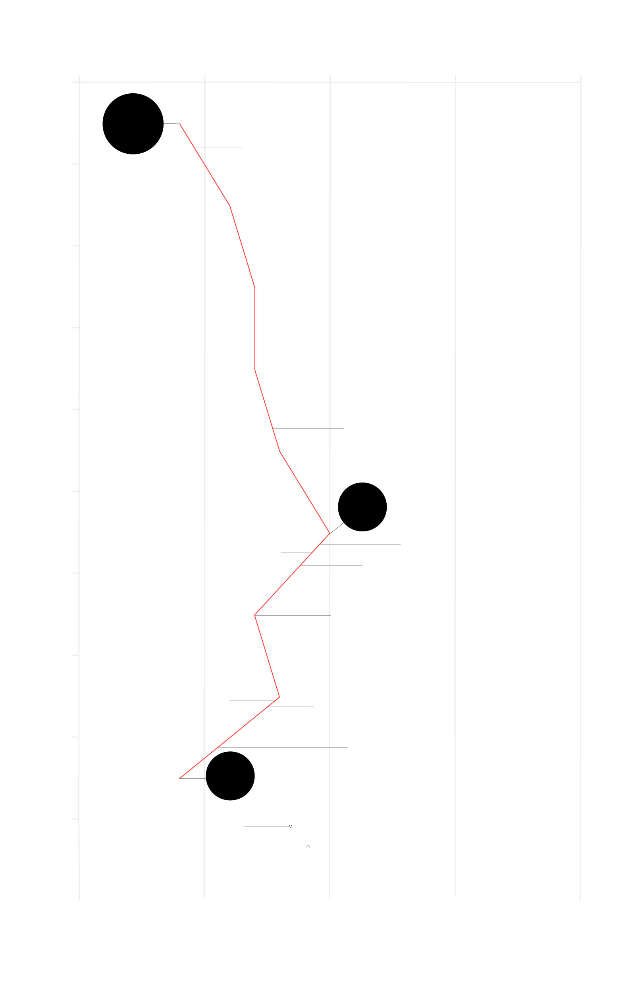

Indonesia’s Generation Zs and Millennials are set to dominate the voting bloc in the upcoming election, wielding the power to shape the nation’s future. Despite their enthusiasm, the lack of political candidates who genuinely represent their aspirations and concerns has fuelled dissatisfaction, if not disengagement, among young voters.
“Many of these young people feel politics haven’t caught up with their concern,” said Dr Alexander Arifianto, a senior fellow with the Indonesia Programme at the S. Rajaratnam School of International Studies (RSIS) in Singapore.
With nearly 55 percent of the total electorate under the age of 40, the challenge for political parties and presidential candidates will be to engage these voters who are better educated, more critical and sensitive than the older generations.
While there is immense potential for political candidates to tap into the enthusiasm of young voters, they often resort to superficial methods engagement, even nominating celebrities as legislative candidates to generate easy buzz and media attention.

A banner promoting presidential candidate Ganjar Pranowo with the caption 'Pillar and Hope of Generation Z'.
The lack of initiatives to discuss programmes that address young voters’ concerns is likely to feed into their apathy and cynicism towards politicians and democratic institutions, namely political parties and the House of Representatives.
“There is a big disconnect between what they claim to be as political parties with what they actually do when it comes to addressing young voters’ concern,” Arifianto said.
Source: Indikator
Abigail Limuria (28) is a co-founder of the youth-led movement Bijak Memilih (meaning “choose wisely”) which aims to empower the youth to be informed voters through education on salient issues and party positions.
She said that while it is difficult to determine the exact level of apathy or enthusiasm among young people, surveys generally indicate a significant portion of them feeling politically frustrated.
“They care, but they are not sure whether their voices are being heard or whether it is possible to instigate change,” Limuria said.
Parties hesitant about adapting to young voters
Despite prevailing cynicism, there is little motivation for political parties to alter their engagement strategy as it doesn’t guarantee electoral success especially when voter turnout is also expected to be high.
Source: International Institute for Democracy and Electoral Assistance
A prime example was in the 2019 election when the Indonesian Solidarity Party (PSI), which had positioned itself as the party for millennials and calls its workers “bro” and “sis”, failed to secure seats in the national legislature and only performed well enough to have representation in the Jakarta provincial legislature and a few municipal legislatures.
“Even parties that specifically try to appeal to young people like PSI and Gelora (Indonesian People’s Wave Party), their efforts are not considered credible because they are also tied to or align themselves with older generation politicians like Mr Jokowi or Mr Prabowo,” Arifianto said.
“I think that also presents a credibility gap to many young people in addition to the lack of specific proposals or specific programmes parties could come up with,” he added.
A senior PSI member praises President Jokowi's accomplishments and work ethic and talks about Jokowism as a progressive ideology based on the current president's style of governance.
Stella Nostra, a 24-year-old Gen-Z, said young people often witness public officials failing to address their concerns and interests “due to corruption, ignorance, lack of transparency, and disconnection”.
“Therefore, they feel that public institutions are not delivering on their mandates, are not transparent in their decision-making processes, and are not prioritising public goods,” she said.
Senior fellow Dr Arifianto said, "When they see TV and social media coverage about the House of Representatives, they see a body that’s very fractious or becoming more of a stumbling block rather than contributing anything positive to Indonesia as a democratic experience."
Eroding public trust in officials as well as government institutions is further exacerbated by a series of corruption cases involving as many as five cabinet ministers since the start of the Jokowi administration in 2014.
The most recent incident was in May implicating the IT minister Johnny G Plate in an alleged million-dollar corruption scandal linked to a telecommunications infrastructure development project.
The monitoring and prosecuting capacity of the country’s main anti-graft agency has also been undermined following a legislative amendment in 2019.
Indonesia's Corruption Perception Index (CPI) rating since 2014
The country has experienced a regression over the past few years

Jokowi is sworn in as president
House speaker Setya Novanto
is sentenced to 15 years in prison
for theft of public funds from
a national ID card programme
Social affairs minister Idrus Marham
is found guilty of embezzlement
related to a power plant project
Deputy speaker Taufik Kurniawan
is convicted for receiving bribes
in the allocation of public funds
KPK bill is passed into law by the House
reforming the anti-graft agency's powers
Jokowi begins his second term as president
Sports minister Imam Nahrawi
is convicted for bribery in the
disbursement of government funding
Social affairs minister Juliari Batubara
is sentenced to 12 years in prison for
receiving kickbacks related to public
COVID-19 aid distribution
Fisheries minister Edhy Prabowo
is found guilty of taking bribes
linked to lobster larvae exports
House deputy speaker Azis Syamsuddin
is found guilty of bribery to
evade a graft investigation
Trade ministry official
Indrasari Wisnu Wardhana
is convicted of corruption
linked to the issuance of
palm oil export permits
IT minister Johnny G Plate
is suspected of graft related
to a telephony project
Source: CPI ratings from Transparency International
All these developments have had a severe impact on the country’s corruption perception rating, which declined to 34 index points in 2022, the lowest level since 2015. Despite this regression, the Jokowi administration appears to be brushing off the issue with no demonstration of genuine commitment to fight corruption.
Young voters' needs
The worry about corruption, however, is not exclusive to young people, and they are also not a homogenous voting bloc with identical interests and worries.
While reliable information on variations within the youth electorate is lacking, differences can be expected between rural and urban youths, for instance.
A peddler and a sign showing one of the legislative candidates from the National Awakening Party (PKB) for Banten province.
Cakra Yudi Putra making an impromptu visit or 'blusukan' to communicate with a local community in Central Jakarta in 2019 (Cakra Yudi Putra)
“As a youth politician, most of us cannot make a decision at a strategic level,” he said. “We can say that many parties right now are only recruiting youths for the sake of representation on paper but turns out there is no significant or meaningful participation in the party decision making.”
Other explanations for low youth representation in political parties include parties’ negative reputation, which deters young people from joining, and the high cost of running in an election even with standard campaign expenses, as well as the practice of “money politics” or vote-buying which is still pervasive in Indonesian politics.
"The youth that are interested in running for a political position, they are not interested in joining a political party," Putra said.
A CSIS survey on young voters found that while 15 percent of respondents expressed an interest in running for public office, only 1 percent indicated a desire to join political parties. This highlights the disconnect between parties and the youth, according to Putra.
"But most of them are engaged in youth community organisations, student councils et cetera because they believe that social mechanism is way more effective to voice out their concerns instead of being engaged in political parties," he added.
*Saiful Mujani Research and Consulting survey was conducted on a sample of "critical" voters, regarded as those who have better access to sociopolitical information and tend to be educated and live in urban areas.
Young politician Putra said Prabowo’s appeal to Gen-Z may stem from their perception of him as a formidable statesman given his military background and his big ideas for the country. His strong position may also grant him the advantage of commanding authority without the need for extensive power consolidation efforts.
Prabowo has also used social media to soften his public image, which helps with his appeal among younger voters. But how much this will alter the perception of other voters and translate into electoral success remains uncertain.
Sofie Syarief is a veteran journalist who has covered Indonesia's politics extensively. She compared the situation to the Philippines in 2022.
"We have in the Philippines, the son of Ferdinand Marcos is actually currently the president. So he won the election – again, the collective memory of what his father did to the country is basically nonexistent for a lot of youngsters," she said.
"Because they don't try to look out for history and Marcos' campaign team definitely managed to whitewash his father's history. And I think that's what Prabowo is trying to do as well," she added.
“I remember clearly what happened in 1997 and 1998. So, however you are going to sell me Prabowo I’m not going to buy it at all,” Syarief said.
Public image and digital engagement aside, young voters have yet to see any policy breakthrough from any of the candidates.
They face the prospect of casting their votes without truly knowing which candidate genuinely represents their interests, potentially widening the gap between the youth and politics.
They could be stuck with expressing their aspirations through social media and informal networks without the ability to turn them into tangible programmes.